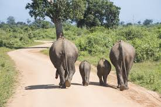
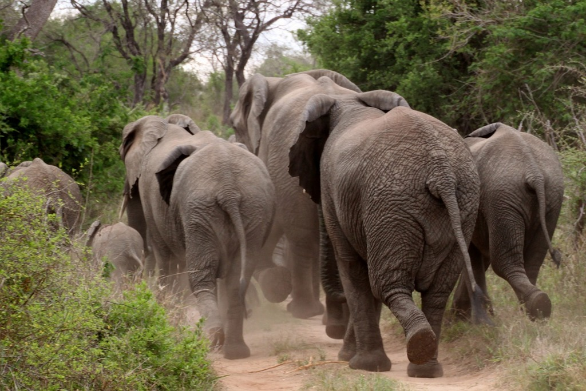
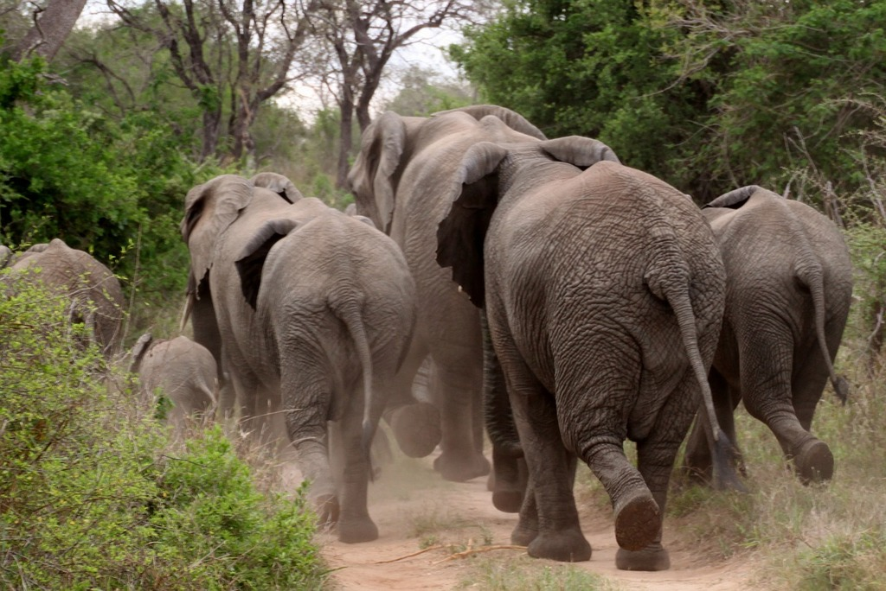

About Elephants
African elephants are the largest land mammal on earth weighing about eight tons. They have massive bodies, large ears and a long trunk, used as a hand to pick up objects, a horn to trumpet warnings, an arm raised in greeting to a hose for drinking water or bathing. Asian elephants are much smaller in size and their ears are straight at the bottom, unlike the large fan-shape ears of the African species. Only some Asian male elephants have tusks. All African elephants, including females, have tusks. Elephants need extensive land to be able to survive. Roaming in herds and consuming hundreds of pounds of plant matter in a single day, both species of elephant require extensive amounts of food, water and space. As a result, these large mammals place great demands on the environment and often come into conflict with people in competition for resources.
Why They Matter
Elephants help maintain forest and savanna ecosystems for other species, and are integrally tied to rich biodiversity. Elephants directly influence forest composition and density, and can alter the broader landscape. In tropical forests, elephants create clearings and gaps in the canopy that encourage tree regeneration. In the savannas, they reduce bush cover to create an environment favorable to a mix of browsing and grazing animals. The seeds of many plant species are dependent on passing through an elephant's digestive tract before they can germinate. It is calculated that at least a third of tree species in central African forests rely on elephants in this way for distribution of seeds.

_mother_and_baby_(8074148819).jpg "ELEPHANT")
 

Threats
Today, the most urgent threat to elephants is large-scale poaching to supply the illegal ivory trade. Other threats facing elephants in Africa and Asia include conflict with humans and habitat loss and degradation. WWF advocates an end to commercial elephant ivory sales in the US and other major markets like China, Thailand and Hong Kong as the most effective and efficient solution to end this illegal ivory trade.
How We Help
WWF helps train wildlife managers and local communities to use modern methods and tools to mitigate human-elephant conflict. We mobilize communities to help protect their crops by monitoring elephants to provide early warning systems, erecting fences where required, and educating communities to reduce conflict through behavior change. Rangers and community-based operations are on the frontlines of the fight against wildlife crime and WWF helps train and equip them. WWF works with TRAFFIC, the international wildlife trade monitoring network, to reduce the major threat that illegal and illicit domestic ivory markets pose to wild elephants. WWF works with elephant range state governments, local people and non-governmental partners to secure a future for this powerful symbol of nature by thinking beyond protected areas.